정보처리기사(구) (2007-05-13 기출문제)
1과목: 데이터 베이스
1. 병행 제어에 영향을 주는 요소로 한 번에 로크(Lock)되어야 할 데이터의 크기를 로킹 단위(Locking Granularity)라고 한다. 이 단위가 클 경우에 대한 설명으로 옳지 않은 것은?
- 병행성 수준이 높아진다.
- 병행제어 기법이 간단하다.
- 로크의 수가 적어진다.
- 극단적인 경우 순차처리 하는 것과 같다.
(정답률: 72%)

2. 데이터베이스의 정의로 가장 적합한 것은?
- 공용 데이터(Shared Data), 통합 데이터(Integrated Data), 통신 데이터(Communication Data), 운영 데이터(Operational Data)
- 공용 데이터(Shared Data), 색인 데이터(Indexed Data), 통신 데이터(Communication Data), 운영 데이터(Operational Data)
- 공용 데이터(Shared Data), 색인 데이터(Indexed Data), 저장 데이터(Stored Data), 운영 데이터(Operational Data)
- 공용 데이터(Shared Data), 통합 데이터(Integrated Data), 저장데이터(Stored Data), 운영 데이터(Operational Data)
(정답률: 81%)
3. 다음의 트리를 포스트오더(Postorder)로 운행할 때 노드 E는 몇 번째로 검사 되는가?
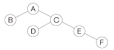
- 2번째
- 3번째
- 4번째
- 5번째
(정답률: 48%)
4. 버킷(Bucket)과 가장 관련이 깊은 것은?
- SAM
- ISAM
- B-Tree
- Hashing
(정답률: 71%)
5. 관계 데이터베이스 제약조건 중 한 릴레이션의 기본 키를 구성하는 어떠한 속성 값도 널(NULL) 값이나 중복 값을 가질 수 없다는 조건은 무엇인가?
- 키 제약 조건
- 참조 무결성 제약 조건
- 참여 제약 조건
- 개체 무결성 제약 조건
(정답률: 68%)
6. 분산 데이터베이스에 대한 설명으로 거리가 먼 것은?
- 지역 자치성이 높다.
- 효용성과 융통성이 높다.
- 분산 제어가 가능하다.
- 소프트웨어 개발 비용이 저렴하다.
(정답률: 92%)
7. 릴레이션 R에 존재하는 모든 조인 종속성이 오직 후보 키를 통해서만 성립되는 경우 이러한 릴레이션은 어떤 정규형에 해당하는가?
- 제 2정규형
- 제 3정규형
- 제 4정규형
- 제 5정규형
(정답률: 58%)
8. 다음의 관계 대수 문장을 SQL로 표현한 것으로 옳은 것은?
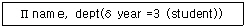
- SELECT name, dept FROM student HAVING year =3 ;
- SELECT name, dept FROM student WHERE year =3 ;
- SELECT student FROM name, dept WHERE year =3 ;
- SELECT student FROM name, dept HAVING year =3 ;
(정답률: 69%)
9. 비선형 자료 구조에 해당하는 것은?
- 큐(Queue)
- 데크(Deque)
- 그래프(Graph)
- 리스트(List)
(정답률: 80%)
10. 다음 문장의 ( ) 안 내용으로 공통 적용될 수 있는 가장 적절한 내용은 무엇인가?
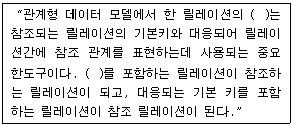
- 후보키(Candidate key)
- 대체키(Alternate key)
- 외래키(Foreign key)
- 수퍼키(Super key)
(정답률: 73%)
11. 다음이 설명하는 관계대수 연산자의 기호는?
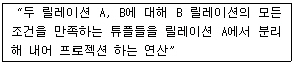
- δ
- Π
- ÷
(정답률: 39%)
12. E-R 다이어그램(Diagram)의 구성 요소에 대한 표현의 연결이 옳지 않은 것은?
- 개체집합 - 사각형
- 관계집합 - 마름모꼴
- 속성 - 원형(타원)
- 링크 - 화살표
(정답률: 69%)
13. 다음의 설명의 의미와 가장 관련 깊은 것은?
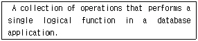
- Query
- Recovery
- Integrity
- Transaction
(정답률: 58%)
14. 다음 자료를 버블 정렬을 이용하여 오름차순으로 정렬할 경우 PASS 2의 결과는?
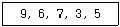
- 3, 5, 6, 7, 9
- 6, 7, 3, 5, 9
- 3, 5, 9, 6, 7
- 6, 3, 5, 7, 9
(정답률: 59%)
15. 트랜잭션의 정의 및 특징이 아닌 것은?
- 한꺼번에 수행 되어야할 일련의 데이터베이스 연산집합
- 사용자의 시스템에 대한 서비스 요구 시 시스템의 상태변환 과정의 작업 단위
- 병행 제어 및 회복 작업의 논리적 작업 단위
- 트랜잭션의 연산이 데이터베이스에 모두 반영되지 않고 일부만 반영시키는 원자성의 성질
(정답률: 78%)
16. 데이터베이스에서 널(Null) 값에 대한 설명으로 옳지 않은 것은?
- 아직 모르는 값을 의미한다.
- 아직 알려지지 않은 값을 의미한다.
- 공백이나 0(Zero)과 같은 의미이다
- 정보 부재를 나타내기 위해 사용한다.
(정답률: 75%)
17. 데이터베이스의 특성으로 옳지 않은 것은?
- 데이터 참조 시 데이터 값에 의해서는 참조 될 수 없으므로 위치나 주소에 의하여 데이터를 찾는다.
- 질의에 대하여 실시간 처리 및 응답이 가능하도록 지원해 준다.
- 삽입, 삭제, 갱신으로 항상 최신의 데이터를 유지한다.
- 다수의 사용자가 동시에 이용할 수 있다.
(정답률: 84%)
18. 정규화의 필요성으로 거리가 먼 것은?
- 데이터 구조의 안정성 최대화
- 중복 데이터의 활성화
- 수정, 삭제 시 이상 현상의 최소화
- 테이블 불일치 위험의 간소화
(정답률: 88%)
19. 데이터의 중복으로 인해 릴레이션 조작 시 예상하지 못한 곤란한 현상이 발생한다. 이를 무엇이라고 하는가?
- Normalization
- Degree
- Cardinality
- Anomaly
(정답률: 79%)
20. 다음 문장의 ( ) 안 내용으로 옳게 짝지어진 적은?
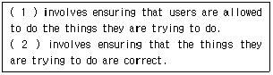
- (1)Security (2)Integrity
- (1)Security (2)Revoke
- (1)Integrity (2)Security
- (1)Integrity (2)Revoke
(정답률: 64%)
2과목: 전자 계산기 구조
21. 기억 소자와 I/O 장치 간의 정보 교환 때 CPU의 개입 없이 직접 정보 교환이 이루어질 수 있는 방식은?
- Strobe 방식
- 인터럽트 방식
- Handshaking 방식
- DMA 방식
(정답률: 75%)
22. Interrupt 중에서 최우선권(Top Priority)이 주어져야 하는 것은?
- Arithmetic Overflow Interrupt
- Interrupt From I/O
- Power Fail Interrupt
- Parity Error Interrupt
(정답률: 70%)
23. 페이징(Paging) 기법과 관계가 있는 것은?
- Cache Memory
- Cycle Stealing
- Associative Memory
- Virtual Memory
(정답률: 45%)
24. 다음 마이크로 연산이 나타내는 동작은?
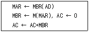
- ADD to AC
- OR to AC
- STORE to AC
- LOAD to AC
(정답률: 62%)
25. 간접 상태(Indirect State)동안에 수행되는 것은?
- 명령어를 읽는다.
- 오퍼랜드의 주소를 읽는다.
- 오퍼랜드를 읽는다.
- 인터럽트를 처리한다.
(정답률: 68%)
26. Half-Adder는 2bit(x,y)를 산술적으로 가산하는 조합회로이며, 이에 해당하는 진리표는 다음과 같다. 캐리(C)와 합(S)을 논리적으로 구한 것은?
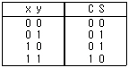
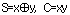
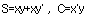
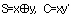
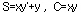
(정답률: 70%)
27. 명령어의 길이가 16Bit이다. 이 중 OP Code가 6Bit, Operand가 10Bit를 차지한다면 이 명령어가 가질 수 있는 연산자의 종류를 최대 몇 개인가?
- 16개
- 32개
- 64개
- 256개
(정답률: 69%)
28. 주기억장치가 연속한 8바이트(Byte)의 필드(Field)를 더블워드(Double Word)라 할 때 하프워드(Half Word)는 몇 바이트인가?
- 2
- 4
- 8
- 16
(정답률: 62%)
29. 1-주소 명령어의 특징으로 올바른 것은?
- 모든 명령은 누산기에 기억되어 있는 자료를 사용한다.
- 스택의 사용이 필수적이다.
- 2개의 오퍼랜드를 가지고 있다.
- 2-주소 명령어와 비교하여 프로그램의 길이가 최소 2배 이상이 된다.
(정답률: 68%)
30. 고급 언어(High-Level Language)에 대한 특징으로 가장 옳은 것은?
- Computer 하드웨어와 Compiler에 종속적이다.
- Computer 하드웨어에 독립적이고, Compiler에 종속적이다.
- Computer 하드웨어에 종속적이고, Compiler에 독립적이다.
- Computer 하드웨어와 Compiler에 독립적이다.
(정답률: 60%)
31. 가상메모리로 사용할 수 있는 보조기억장치로 가장 적당한 기록 매체는?
- 자기디스크(Magnetic Disk)
- 자기테이프(Magnetic Tape)
- 캐시메모리(Cache Memory)
- RAM(Random ACCESS Memory)
(정답률: 56%)
32. 동기가변식(Synchronous Variable) 동작에 대한 설명 중 옳지 않은 것은?
- 각 마이크로 오퍼레이션의 사이클 타임이 현저한 차이를 나타낼 때 사용한다.
- 모든 마이크로 오퍼레이션의 수행 시간이 유사한 경우에 사용된다.
- 중앙처리장치의 시간을 효율적으로 이용할 수 있다.
- 마이크로 오퍼레이션에 대하여 서로 다른 사이클을 정의 할 수 있다.
(정답률: 49%)
33. 연산 후의 결과를 임시 저장하는 기억 장소는?
- 데이터 카운터
- 누산기
- 인스트럭션 레지스터
- 프로그램 카운터
(정답률: 69%)
34. 리커션(Recursion)프로그램에 해당하는 것은?
- 한 루틴(Routine)이 반복될 때
- 한 루틴(Routine)이 자기를 다시 호출할 때
- 다른 루틴(Routine)이 다른 루틴을 호출할 때
- 한 루틴(routine)에서 다른 루틴으로 갈 때
(정답률: 76%)
35. 주기억장치에 기억된 명령을 꺼내서 해독하고, 시스템 전체에 지시 신호를 내는 것은?
- Channel
- ALU
- Control Unit
- I/O Unit
(정답률: 60%)
36. 다음 그림의 연산 결과로 옳은 것은?
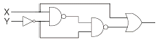
- X
- Y
- X + Y
- XY' + X
(정답률: 48%)
37. 다음 중 부 프로그램과 매크로(Macro)의 공통점은?
- 삽입하여 사용한다.
- 분기로 반복을 한다.
- 다른 언어에서도 사용한다.
- 여러 번 중복되는 부분을 별도로 작성하여 사용한다.
(정답률: 75%)
38. Interleaved Memory에 대한 설명과 관계가 없는 것은?
- 중앙처리의 쉬는 시간을 줄일 수 있다.
- 단위시간당 수행할 수 있는 명령어의 수를 증가 시킬 수 있다.
- 이 기억장치를 구성하는 모듈의 수만큼의 단어들에 동시 접근이 가능하다.
- 데이터의 저장 공간을 확장하기 위한 방법이다.
(정답률: 58%)
39. 명령어의 주소 부분과 PC 값을 더해서 유효 주소를 결정하는 주소 모드는?
- Implied 모드
- Relative Address 모드
- Index Address 모드
- Register Indirect 모드
(정답률: 55%)
40. 마이크로프로그램의 크기가 2048 X 64비트, 마이크로 인스트럭션 수가 128개일 때 Nano Programming을 위한 컨트롤 스토어(Control Store)의 크기는?
- 2048 × 64비트
- 2048 × 7비트
- 2048 × 32비트
- 128 × 64비트
(정답률: 51%)
3과목: 운영체제
41. UNIX 파일 시스템의 특징이 아닌 것은?
- 파일 소유자, 그룹 및 그 외 다른 사람들로부터 사용자를 구분하여 파일을 보호한다.
- 디렉토리 구조는 이중 레벨 구조이다.
- 주변장치를 파일과 동일하게 취급한다.
- 파일 생성, 삭제, 보호 기능을 갖는다.
(정답률: 66%)
42. 색인 순차 파일의 인덱스에 포함되지 않는 것은?
- 오버플로우 인덱스(Overflow Index)
- 마스터 인덱스(Master Index)
- 트랙 인덱스(Track Index)
- 실린더 인덱스(cylinder Index)
(정답률: 62%)
43. 파일 보호 기법 중 각 파일에 접근 목록을 두어 접근 가능한 사용자와 가능한 동작을 기록한 후, 이를 근거로 접근을 허용하는 기법은?
- 파일의 명명(Naming)
- 비밀번호(Password)
- 접근 제어(Access Control)
- 암호화(Cryptography)
(정답률: 82%)
44. 파일 디스크립터에 대한 설명으로 옳지 않은 것은?
- 사용자가 직접 관리하므로 사용자가 참조할 수 있다.
- 파일을 관리하기 위해 시스템이 필요로 하는 정보를 보관한다.
- 일반적으로 보조기억장치에 저장되어 있다가 파일이 개방(Open)될 때 주기억장치로 옮겨진다.
- File Control Block 이라고도 한다.
(정답률: 71%)
45. 다음 표와 같이 작업이 할당되었을 경우 내부 단편화 및 외부 단편화 크기는 얼마인가?
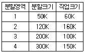
- 내부 단편화 : 250 K, 외부 단편화 : 170 K
- 내부 단편화 : 170 K, 외부 단편화 : 250 K
- 내부 단편화 : 300 K, 외부 단편화 : 1140 K
- 내부 단편화 : 670 K, 외부 단편화 : 470 K
(정답률: 64%)
46. 분산 처리 운영체제에서 구체적인 시스템 환경을 사용자가 알 수 없도록 하며, 또한 사용자들로 하여금 이에 대한 정보가 없이도 원하는 작업을 수행할 수 있도록 지원하는 개념을 무엇이라 하는가?
- Naming
- Transparence
- Migration
- NFS
(정답률: 53%)
47. 주기억장치에 완전히 비어 있는 3개의 페이지가 있다. 페이지 교체 방법으로 LRU를 사용할 때 요청된 페이지 번호의 순서가 0, 1, 2, 3, 0, 1, 4, 0 인 경우 페이지 부재(Fault)는 몇 번 발생 하는가?
- 5
- 6
- 7
- 8
(정답률: 59%)
48. UNIX의 쉘(Shell)에 대한 설명으로 옳지 않은 것은?
- 시스템과 사용자 간의 인터페이스를 담당한다.
- 프로세스 관리, 파일 관리, 입·출력관리, 기억장치 관리 등의 기능을 수행한다.
- 명령어 해석기 역할을 한다.
- 사용자의 명령어를 인식하여 프로그램을 호출한다.
(정답률: 68%)
49. 다음은 운영체제가 해결해야 할 문제점이다. 이러한 문제점 발생의 직접적 원인으로 가장 타당한 것은?
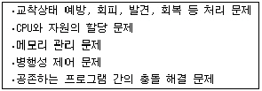
- 메모리 및 자원의 효율적인 사용
- 사용자에게 편리한 인터페이스 제공
- 다중 프로그래밍 기법 이용
- CPU 처리속도 및 입·출력 장치와의 속도 차이
(정답률: 50%)
50. UNIX 운영체제의 특징으로 볼 수 없는 것은?
- 대화식 운영체제이다.
- 다중 사용자 시스템이다.
- 대부분의 코드가 어셈블리 언어로 기술되어 있다.
- 높은 이식성과 확장성이 있다.
(정답률: 80%)
51. 운영체제의 역할로 거리가 먼 것은?
- 사용자와 시스템 간의 인터페이스 제공
- 여러 사용자 간의 자원 공유 기능 제공
- 자원의 효율적인 운영을 위한 스케줄링
- 입·출력에 대한 주력적인 역할 수행
(정답률: 69%)
52. 다음은 교착 상태 발생조건 중 어떤 조건을 제거하기 위한 것인가?
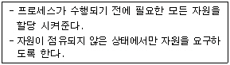
- Multi Exclusion
- Hold and Wait
- Non-preemption
- Circular Wait
(정답률: 48%)
53. CPU 스케줄링을 평가하는 기준으로 가장 거리가 먼 것은?
- 처리량(Throughput)
- 대기시간(Waiting Time)
- 균형 있는 자원 이용
- 오류 복구 시간
(정답률: 60%)
54. 현재 헤드의 위치가 50에 있고, 요청 대기 열의 순서가 다음과 같은 경우, C-SCAN 스케줄링 알고리즘에 의한 헤드의 총 헤드의 총 이동거리는 얼마인가? (단, 현재 헤드의 이동 방향은 안쪽이다.)
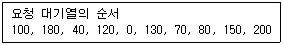
- 790
- 380
- 370
- 250
(정답률: 44%)
55. 가상기억장치 관리 기법에서 페이지(Page) 크기에 관한 설명으로 옳은 것은?
- 페이지 크기가 작을 경우 - 참조되는 정보와는 무관한 정보가 페이지 크기가 큰 경우보다 더 많이 주기억장치에 적재 될 수 있다.
- 페이지 크기가 작을 경우 - 마지막 페이지의 내부 단편화는 늘어난다.
- 페이지 크기가 클 경우 - 마지막 페이지의 내부 단편화 가 줄어든다.
- 페이지 크기가 클 경우 - 페이지 테이블의 크기는 작아진다.
(정답률: 53%)
56. CPU 스케줄링 특성 중 대화형 시스템에서 가장 중요한 인자로 사용되는 것은?
- 반응시간(Response Time)
- 비용(Cost)
- CPU 사용률
- 처리량(Throughput)
(정답률: 62%)
57. 프로세스(Process) 정의에 대한 설명 중 옳지 않은 것은?
- 동기적 행위를 일으키는 주체
- 실행중인 프로그램
- 프로시저의 활동
- 운영체제가 관리하는 실행 단위
(정답률: 68%)
58. 다음 설명은 분산 처리 시스템의 장점 중 무엇에 해당하는가?
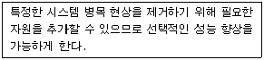
- 통신과 정보공유
- 점진적인 확장
- 가용성
- 고장 허용성
(정답률: 65%)
59. 로더의 종류 중 별도의 로더 없이 언어 번역 프로그램이 로더의 역할까지 담당하는 것은?
- Absolute Loader
- Relocating Loader
- Overlay Loader
- Compile and Go Loader
(정답률: 67%)
60. 다중 처리기 운영체제 형태 중 주/종(Master/Slaver) 시스템에 대한 설명으로 옳지 않은 것은?
- 주 프로세서와 종 프로세서 모두 운영체제를 수행한다.
- 비대칭 구조를 갖는다.
- 주 프로세서는 입·출력과 연산을 담당하고, 종 프로세서는 연산만 담당한다.
- 주 프로세서가 고장나면 시스템 전체가 다운된다.
(정답률: 71%)
4과목: 소프트웨어 공학
61. 소프트웨어 품질 관리 위원회의 기본적인 목적으로 가장 바람직한 것은?
- 소프트웨어 품질 향상
- 표준화 준수 여부 검증
- 도큐먼트(Document)의 품질 검사
- 사용자와의 관계 향상
(정답률: 71%)
62. 위험 모니터링(Monitoring)의 의미로 가장 적절한 것은?
- 위험을 이해하는 것
- 위험 요소들에 대하여 계획적으로 관리하는 것
- 위험 요소 징후들에 대하여 계속적으로 인지하는 것
- 첫 번째 조치로 위험을 피할 수 있도록 하는 것
(정답률: 69%)
63. 소프트웨어 프로젝트 일정이 지연될 경우, 개발사업 말기에 인력을 추가 배치하는 것은 사업 일정을 더욱 지연시키는 결과를 초래한다는 법칙은?
- Boehm
- Albrecht
- Putnam
- Brooks
(정답률: 74%)
64. 소프트웨어 생명주기의 전체 단계를 연결시켜 주고 자동화 시켜주는 통합된 도구를 제공해주는 것은?
- UIMS
- CASE
- OOD
- SADT
(정답률: 80%)
65. 민주주의적 팀(Democratic Teams)에 대한 내용으로 옳은 것은?
- 프로젝트 팀의 목표 설정 및 의사결정 권한이 팀 리더에게 주어진다.
- 조직적으로 잘 구성된 중앙집중식 구조이다.
- 팀 구성원 간의 의사교류를 활성화시키므로 팀원의 참여도와 만족도를 증대시킨다.
- 팀 리더의 개인적 능력이 가장 중요하다.
(정답률: 82%)
66. 다음 검사의 기법 중 종류가 다른 하나는 무엇인가?
- 동치 분할 검사
- 원인 효과 그래프 검사
- 비교 검사
- 데이터 흐름 검사
(정답률: 58%)
67. 소프트웨어 형상 관리(Software Configuration-Management)의 설명으로 가장 적합한 것은?
- 소프트웨어 개발 과정을 문서화하는 것이다.
- 하나의 작업 산출물을 정해진 시간 내에 작성하도록 하는 관리이다.
- 수행결과의 완전성을 점검하고 프로젝트의 성과 평가척도를 준비하는 작업이다.
- 소프트웨어의 생산물을 확인하고 소프트웨어 통제, 변경상태를 기록하고 보관하는 일련의 관리 작업이다.
(정답률: 72%)
68. 소프트웨어의 품질 목표 중에서 옳고 일관된 결과를 얻기 위하여 요구된 기능을 수행할 수 있는 정도를 나타낸 것은?
- 정확성(Correctness)
- 신뢰성(Reliability)
- 효율성(Efficiency)
- 무결성(Intergrity)
(정답률: 60%)
69. 객체지향 분석 기법의 하나로 객체 모형, 동적 모형, 기능 모형의 3개 모형을 생성하는 방법은?
- Wirfs-Block Method
- Rambaugh Method
- Booth Method
- Jacobson Method
(정답률: 76%)
70. 자료 사전에서 기호 “{ }”의 의미는?
- “Optional”
- “Is composed Of”
- “Iteration Of”
- “Comment“
(정답률: 56%)
71. 다음 설명에 해당하는 것은?
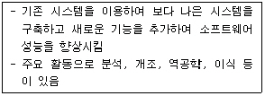
- 소프트웨어 재공학
- 소프트웨어 분석
- 소프트웨어 프로그래밍
- 소프트웨어 개발
(정답률: 81%)
72. 객체 지향 개념 중 하나 이상의 유사한 객체들을 묶어 공통된 특성을 표현한 데이터 추상화를 의미하는 것은?
- 메소드
- 클래스
- 상속성
- 추상화
(정답률: 68%)
73. 사용자 인터페이스 설계 시 오류 메시지나 경고에 관한 다음의 지침 중 잘못된 것은?
- 메시지는 이해하기 쉬어야 한다.
- 오류로부터 회복을 위한 구체적인 설명이 제공되어야 한다.
- 오류로 인해 발생될 수 있는 부정적인 내용은 가급적 피한다.
- 소리나 색 등을 이용하여 듣거나 보기 쉽게 의미 전달을 하도록 한다.
(정답률: 82%)
74. 자료 흐름도(DFD)의 구성 요소가 아닌 것은?
- 처리
- 자료 흐름
- 단말
- 기수
(정답률: 76%)
75. 좋은 모듈이 되기 위한 응집도와 결합도에 대한 설명으로 옳은 것은?
- 모듈의 응집도와 결합도 모두가 높아야 한다.
- 모듈의 응집도는 높아야 하고 결합도는 낮아야 한다.
- 모듈의 응집도는 낮아야 하고 결합도는 높아야 한다.
- 모듈의 응집도와 결합도 모두가 낮아야 한다.
(정답률: 74%)
76. 소프트웨어의 위기 현상과 거리가 먼 것은?
- 유지보수의 어려움
- 개발 인력의 급증
- 성능 및 신뢰성의 부족
- 개발 기간의 지연 및 개발 비용의 증가
(정답률: 81%)
77. 소프트웨어 개발 방법론에서 구현(Implementation)에 대한 설명으로 가장 적절한 것은?
- 요구사항 분석 과정 중 모아진 요구사항을 옮기는 것
- 시스템이 무슨 기능을 수행 하는지에 대한 시스템의 목표 기술
- 프로그램 또는 코딩이라고 불리며 설계 명세서가 컴퓨터가 알 수 있는 모습으로 변환되는 과정
- 시스템이나 소프트웨어 요구 사항을 정의하는 과정
(정답률: 76%)
78. 객체지향 시스템에서 자료 부분과 연산(또는 함수) 부분 등 정보처리에 필요한 기능을 한 테두리로 묶는 것을 무엇이라고 하는가?
- 정보은닉(Information Hiding)
- 클래스(Class)
- 캡슐화(Encapsulation)
- 통합(Intergration)
(정답률: 68%)
79. 소프트웨어 재사용의 이점에 속하지 않은 것은?
- 소프트웨어의 품질 향상
- 소프트웨어의 개발 시간과 비용 감소
- 소프트웨어의 생산성 증가
- 소프트웨어 프로그래밍 언어의 종속
(정답률: 79%)
80. 소프트웨어 개발 단계에서 가장 많은 비용이 소요되는 단계는?
- 계획 단계
- 분석 단계
- 구현 단계
- 유지보수 단계
(정답률: 78%)
5과목: 데이터 통신
81. 하나의 메시지 단위로 저장-전달 (Store-and-Forward) 방식에 의해 데이터를 교환하는 방식은?
- 메시지 교환
- 공간분할 회선 교환
- 패킷 교환
- 시분할 회선 교환
(정답률: 65%)
82. 가상 회선 패킷 교환 방식에서 모든 패킷이 전송되면, 마지막으로 이미 확립된 접속을 끝내기 위해 이용되는 패킷은?
- Call Accept 패킷
- Clear Request 패킷
- Call Identifier 패킷
- Reset 패킷
(정답률: 72%)
83. OSI 7계층에서 종단 사용자 (End-to-End) 간의 신뢰성을 위한 계층은?
- Application
- Presentation
- Transport
- Physical
(정답률: 54%)
84. 인터넷 프로토콜로 사용되는 TCP/IP 계층화 모델 중 Transport 계층에서 사용되는 프로토콜은?
- FTA
- IP
- ICMP
- UDP
(정답률: 61%)
85. HDLC의 프레임 구조를 올바르게 나타낸 것은?
- 플래그-제어부-주소부-정보부-FCS-플래그
- 플래그-제어부-정보부-주소부-FCS-플래그
- 플래그-주소부-제어부-정보부-FCS-플래그
- 플래그-정보부-제어부-주소부-FCS-플래그
(정답률: 61%)
86. 4800[bps]의 8위상 편이변조방식 모뎀의 변조 속도는 몇 보오[baud]인가?
- 800
- 1600
- 3200
- 6400
(정답률: 68%)
87. 인터넷 응용서비스 중에서 가상 터미널(VT) 기능을 갖는 것은?
- FTP
- Archie
- Gopher
- Telnet
(정답률: 72%)
88. 다음 중 데이터 (Data) 전송제어의 절차를 순서대로 옳게 나열한 것은?
- 회선접속 → 데이터링크 확립 → 정보 전송 → 회선절단 → 데이터링크 해제
- 데이터링크 확립 → 회선접속 → 정보 전송 → 데이터링크 해제 → 회선절단
- 회선접속 → 데이터링크 확립 → 정보 전송 → 데이터링크 해제 → 회선절단
- 데이터링크 확립 → 회선접속 → 정보 전송 → 회선절단 → 데이터링크 해제
(정답률: 80%)
89. 효율적인 전송을 위하여 넓은 대역폭(혹은 고속 전송 속도)을 가진 하나의 전송링크를 통하여 여러 신호(혹은 데이터)를 동시에 실어 보내는 기술은?
- 집중화
- 다중화
- 부호화
- 변조화
(정답률: 71%)
90. 여러 개의 터미널 신호를 하나의 통신회선을 통해 전송할 수 있도록 하는 장치는?
- 변/복조기
- 멀티플렉서
- 신호변환기
- 디멀티플렉서
(정답률: 67%)
91. 다음 중 TCP(Transmission Control Protocol)의 특징이 아닌 것은?
- 접속형(Connection-Or iented) 서비스
- 경로 설정(Routing) 서비스
- 전이중(Full-Duplex) 전송 서비스
- 신뢰성(Reliability) 서비스
(정답률: 34%)
92. 데이터 전송 중 발생한 에러를 검출하는 기법으로 옳지 않은 것은?
- Parity Check
- Block Sum Check
- Slide Window check
- Cyclic Redundancy Check
(정답률: 66%)
93. 패킷 교환망에서 패킷을 적절한 경로를 통해 오류 없이 목적지까지 정확하게 전달하기 위한 기능으로 옳지 않은 것은?
- 흐름 제어
- 에러 제어
- 경로 배정
- 집중화
(정답률: 68%)
94. 패킷교환의 가상회선 방식과 회선교환 방식의 공통점은?
- 전용회선을 이용한다.
- 별도의 호(Call) 설정 과정이 있다.
- 회선 이용률이 낮다.
- 데이터 전송 단위 규모를 가변으로 조정할 수 있다.
(정답률: 57%)
95. 시분할 다중화(TDM)의 설명으로 옳은 것은?
- 여러 신호를 전송매체의 서로 다른 주파수 대역을 이용하여 전송하는 기술이다.
- 동기식 시분할 다중화 (STDM)는 한 전송회선의 대역폭을 일정한 시간 단위로 나누어 각 채널에 할당하는 방식이다.
- STDM은 대역폭을 감소시키는 효과가 있어, 전체적인 전송 시스템의 성능이 향상되는 장점이 있다.
- 비동기식 시분할 다중화 (ATDM)는 헤더 정보를 필요로 하지 않으므로, STDM에 비해 시간 슬롯당 정보 전송률이 증가한다.
(정답률: 59%)
96. 동기식 전송 방식과 관련이 없는 것은?
- 문자 또는 비트들이 데이터 블록을 송·수신한다.
- 전송데이터와 제어정보를 합쳐서 레코드라 한다.
- 제어정보의 앞 부분을 프리앰블, 뒷 부분을 포스트앰블이라 한다.
- 문자위주와 비트위주 동기식 전송으로 구분된다.
(정답률: 44%)
97. 다음 중 라우팅 프로토콜이 아닌 것은?
- BGP(Border Gateway Protocol)
- EGP(Exterior Gateway Protocol)
- SNMP(Simple Network Management Protocol)
- RIP(Routing Information Protocol)
(정답률: 71%)
98. 다음 중 데이터 전송에서 오류 발생의 주된 원인으로 옳지 않은 것은?
- 신호 감쇠 현상
- 지연 왜곡
- 잡음
- 채널 수
(정답률: 80%)
99. 다음 LAN의 네트워크 토폴로지는 어떤 형인가?
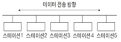
- 버스형
- 성형
- 링형
- 그물형
(정답률: 82%)
100. 다음이 설명하고 있는 디지털 전송 신호의 부호화 방식은?
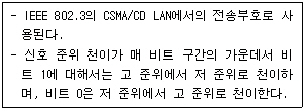
- Alternating Mark Inversion 코드
- Manchester 코드
- Bipolar 코드
- Non Return to Zero 코드
(정답률: 58%)
로킹 단위가 클수록 한 번에 로크되는 데이터의 양이 많아지기 때문에 병행성 수준이 낮아지고, 병행제어 기법이 복잡해지며, 로크의 수가 많아지게 됩니다. 따라서 극단적인 경우 순차처리하는 것과 같아질 수 있습니다.
반면에 로킹 단위가 작을수록 한 번에 로크되는 데이터의 양이 적어져서 병행성 수준이 높아지고, 병행제어 기법이 간단해지며, 로크의 수가 적어지게 됩니다. 이는 동시에 처리할 수 있는 트랜잭션 수가 증가하고, 시스템의 성능이 향상될 수 있습니다.